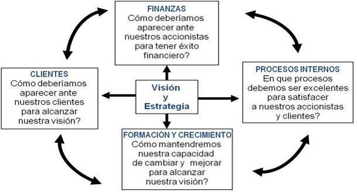

Control
El control es la verificación de ciertas características utilizando algún medio de medición y
algún estándar que pueda servir como marco de referencia en dicho proceso.
Cuadro de Mando Integral:
Es un sistema gerencial estratégico que complementa las medidas financieras tradicionales con medidas de
actuación futuras. Los objetivos e indicadores del Cuadro de Mando se derivan de la Visión y
estrategia de la organización. Contemplan la actuación de la organización desde cuatro perspectivas:

LAS FASES DEL PROCESO DE CONTROL:
- Medición (Técnicas, variables, indicadores, criterios y unidades de medida).
- Comparación (Definición de estándares: objetivos y/o indicadores).
- Corrección.
PRINCIPIOS DE UN SISTEMA DE CONTROL:
- Ser entendible.
- Efectividad y rapidez (detección de desviaciones en momento oportuno).
- Flexibilidad (adaptación a cambios en la actividad).
- Economicidad.
- Continuidad.